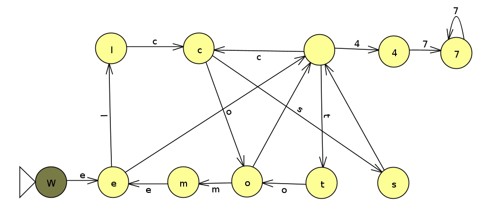

Homework 1: Welcome To CS 477 (15 Points)
Learning Objectives
- Practice python loops and dictionaries
- Use python dictionaries in the service of statistical modeling
Part 1: Welcome to CS 477 (5 Points)
There are 5 easy points to earn here:- Read over the syllabus and complete the 3-point syllabus quiz at this link
- Click here to complete the personal survey for the course for 1 point.
- Click here to sign up for the class Discord. Post a message on the #general channel and let us know what your favorite animal is!
As an ungraded final step, click here to fill out an office hours survey for what times you can make if you want to make sure that the hours I choose work with your schedule. Put a check next to every time block for which you can make at least 30 minutes on at that time on that day of the week. I will do my best to ensure that every student can make at least one such block.
Part 2: We tomelcs 477777 (10 Points)
In this part, you're going to practice with python dictionaries and lists. The code will be quite short, but it will serve as a springboard to more complex things later on in assignment 3. (I was inspired to do this after a discussion with Alvin Grissom).
If we consider the sentence "Welcome to cs 477," we can create a sequence model known as a Markov Chain to describe the string statistically. In particular, we can create a directed graph with a node for each letter that occurs in our string and directed edges from letters to the letters that follow them. The picture below shows such a graph for the string "Welcome to cs 477" (Click here to download the JFlap specification for this graph if you're interested)

Starting at W, we can follow a path through this graph to recover our original string, as shown below
However, there are actually (infinitely) many paths we can choose starting at W, such as "We tomelcs 477777"
Your job in this task will be to perform a random walk through such a graph and record what string was generated. The code below shows how to use python dictionaries and lists in concert to setup a data structure that fully captures the above graph
After running this code, you'll see a dictionary with the following key : value pairs
Build on this code to create a subsequent loop that starts at W and takes a random walk of a particular maximum length specified as a variable. If there are multiple possible next states, choose one uniformly at random. If there are no next states, then you should stop the loop, even if you haven't reached your maximum length (all of the nodes in the example above have at least one next state, but your code should handle examples that don't).
When you are finished, submit your code on canvas.